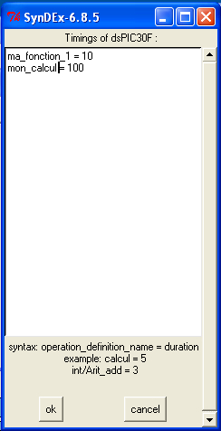
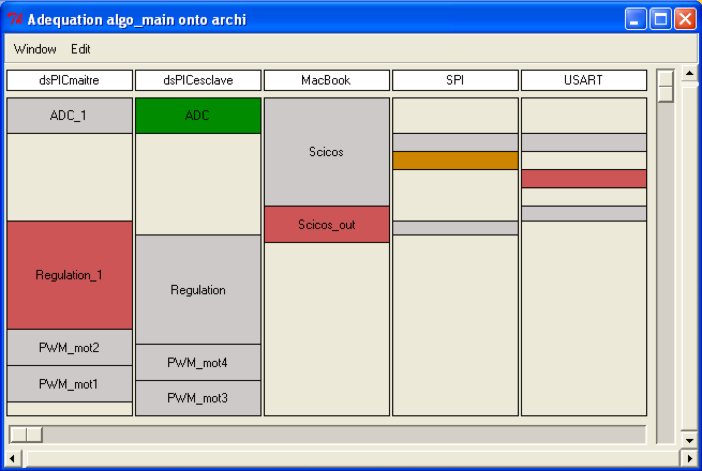
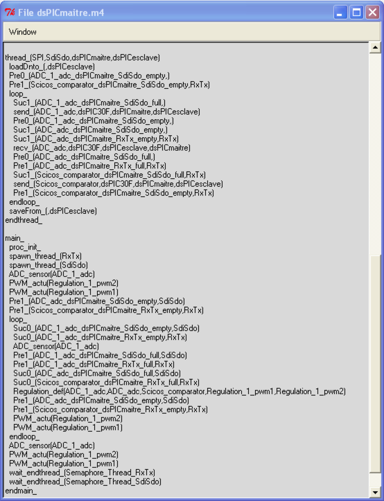

Découverte du logiciel SynDEx
 Présentation
Présentation
Nous avons vu dans ce tutoriel, que le logiciel Scicoslab peut facilement intégrer des bibliothèques écrites en langage C pour interagir avec des systèmes embarqués via des capteurs ou des actionneurs (caméra, joystick, port série). Nous avons également vu qu'il n'est pas toujours aisé de l'insérer dans une boucle d'asservissement pour contrôler des systèmes temps réel (comme pour l'hélicoptère quatre rotors). Néanmoins, il est toujours possible de demander à Scicos de générer automatiquement du code C à partir d'un schéma block. Ce code peut être compilé, par exemple, pour un Linux temps réel (un Linux dont le noyau a été patché pour utiliser le temps réel dur).
On peut vouloir être encore plus ambitieux et, toujours à partir du même schéma block, vouloir générer automatiquement du code pour n'importe quelle architecture multiprocesseur et répartir au mieux les opérations d'un programme qui peuvent être exécutées en parallèle. Scicos ne le fait pas automatiquement mais, par contre, il existe un logiciel nommé SynDEx qui permet de générer du code distribué.
Cette page fait une rapide présentation du logiciel SynDEx. Ce logiciel fut utilisée par exemple pour un projet personnel hélicoptère quatre rotors comprenant deux micro-controlleurs. Un noyau d'exécutif (terme SynDEx que l'on peut définir en première approximation par bibliothèque) écrite en C permet au logiciel SynDEx de générer du code pour les microprocesseurs dsPIC.
NOTE: cette bibliothèque est en cours de développement et n'est pas encore disponible sur ce site.
Qu'est ce que la méthodologie AAA ?
Le document
 Modèle
d'exécutif distribué temps réel pour SynDEx décrit la méthodologie
AAA que nous allons résumer ici.
Modèle
d'exécutif distribué temps réel pour SynDEx décrit la méthodologie
AAA que nous allons résumer ici.
La méthodologie d'Adéquation Algorithme Architecture (AAA) est basée sur des modèles de graphes pour spécifier d'une part l'algorithme et d'autre part l'architecture matérielle. La description de l'algorithme permet de mettre en évidence le parallélisme potentiel tandis que celle de l'architecture met en évidence le parallélisme disponible. Cette méthode consiste en fait à décrire l'implantation en terme de transformations de graphes. En effet, le graphe modélisant l'algorithme est transformé jusqu'à ce qu'il corresponde au graphe matériel modélisant l'architecture. L'implantation de l'algorithme sur l'architecture consiste donc à réduire le parallélisme potentiel au parallélisme disponible tout en cherchant à respecter les contraintes temps réel. Toutes ces transformations sont effectuées avant l'exécution en temps réel de l'application. Elles correspondent à une distribution et à un ordonnancement des différents calculs sur les processeurs et des communications sur les liaisons physiques inter-processeurs. C'est à partir de ces allocations spatiales et temporelles qu'un exécutif va pouvoir être généré et permettre l'exécution de l'algorithme sur l'architecture construite avec des processeurs. Cependant, pour que cette implantation soit vraiment efficace, il est nécessaire de réaliser une adéquation entre l'algorithme et l'architecture. Celle-ci consiste à choisir parmi toutes les transformations proposées celle qui optimise les performances temps réel.
{kind=link}
Diagramme résumant la méthodologie AAA.
Qu'est ce que SynDEx ?
SynDEx est un logiciel de CAO mettant en oeuvre la méthodologie AAA pour le prototypage rapide et l'optimisation de la mise en oeuvre d'applications distribuées temps réel embarquées. A partir d'un algorithme et d'une architecture tous deux donnés sous forme de graphe, SynDEx génère une implémentation distribuée de l'algorithme en langage GNU M4 appelé exécutif. On peut égallement obtenir un graphe d'algorithme en exportant depuis Scicos un schéma pour SynDEx.
Modèles d'algorithmes et d'architectures
Algorithmes
Un algorithme est modélisé par un graphe flot de données éventuellement conditionné (il s'agit d'un hypergraphe orienté), qui se compose de sommets et d'arcs. Un sommet est une opération et un arc un flot de données, c'est-à-dire un transfert de données entre deux opérations.
{kind=link}
Exemple de graphe d'algorithme sous SynDEx.
Une opération peut-être soit un calcul (comme une addition), soit une mémoire d'état (retard), soit un conditionnement ou encore une entrée-sortie. Les sommets qui ne possèdent pas de prédécesseur sont des interfaces d'entrée (capteurs recevant les stimuli de l'environnement) et ceux qui ne possèdent pas de successeur représentent des interfaces de sortie (actionneurs produisant les actions vers l'environnement). Dans le cas d'une opération de calcul, la consommation des entrées précède la production des sorties.
Architecture
Une architecture est modélisée par un graphe dont chaque sommet représente un processeur ou un média de communication, et chaque arc représente une connexion entre un processeur et un média de communications (SAM ou RAM). On ne peut connecter directement deux processeurs ou deux médias. Chaque sommet est une machine séquentielle qui séquence soit des opérations de calcul pour les processeurs, soit des opérations de communications pour les médias de communications.
{kind=link}
Exemple de graphe d'architecture sous SynDEx.
Un processeur et les médias de communication sont des représentations abstraites de ce que peut être un PC, un Macintosh, un processus (Window, Unix, Mac) ou un microcontrôleur PIC, dsPIC ou bien des médias de communications comme le TCP/IP, bus CAN, USB, FireWire, port série.
Heuristique de distribution et d'ordonnancement
Une fois les spécifications de l'algorithme et de l'architecture effectuées, il est nécessaire de réaliser l'adéquation. Celle-ci est chargée de respecter d'une part l'ordre des événements précisés lors de la spécification de l'algorithme et d'autre part les contraintes temps réel. Pour cela, parmi toutes les transformations de graphes possibles, est choisie celle qui optimise les performances temps réel de l'implantation en terme de latence. La latence ou temps de réponse R est donnée par la longueur du chemin critique du graphe logiciel, dont les sommets sont valués par les durées d'exécution des opérations correspondantes y compris celles des communications inter-processeurs.
Afin de résoudre ce problème d'optimisation du temps de réponse, une heuristique a été développée. Il s'agit d'un algorithme glouton dont chaque étape alloue une opération à un processeur, route les éventuelles communications inter-processeurs c'est-à-dire crée des opérations de communication et alloue chacune d'elles à une liaison physique. L'ordonnancement des opérations de calculs ou de communication est directement déduit de l'ordre dans lequel elles sont allouées.
Cette méthode consiste donc à faire progresser le long du graphe une coupe séparant les opérations déjà placées sur des processeurs de celles qui ne le sont pas encore. La progression se fait en respectant les précédences du graphe logiciel. De toutes les opérations à distribuer sur la coupe et de tous les processeurs, on choisit la paire qui optimise une fonction locale de coût prenant en compte :
Les différences entre dates locales d'exécution au plus tôt et au plus tard (schedule flexibility) l'allongement du temps global d'exécution : le temps de réponse (latence) le rythme d'entrée (cadence) la capacité mémoire.
En résumé
Entrées de SynDEx
Pour résumé, SynDEx prend en entrée :
- Un graphe d'algorithme (obtenu, par exemple, à partir d'un schéma bloc Scicos).
- Un graphe d'architecture constitué de processeurs (rectangles bleus et blancs) et de médias de communication (ronds bleus et arcs)
- Les durées des tâches et des communications (et dans la prochaine version leur période).
 Durée des opérations |
{kind=link}
Sorties de SynDEx
SynDEx génère automatiquement :
- Un agenda des tâches à exécuter dans le temps.
- Des exécutifs à savoir les programmes pour chaque processeur écrit en pseudo code.
L'agenda des tâches à exécuter est constitué de colonnes symbolisant les processeurs de l'architecture ainsi que les médias de communication :
- Le contenu des colonnes sont les tâches ou les envois/réceptions à exécuter dans le temps (de haut en bas) pour chaque processeur ou chaque média.
- Les épaisseurs des tâches donnent la durée d'exécution.
- La couleur orange est l'opération (ou communication) pointée par le curseur de la souris (on ne la voit pas sur la capture d'écran).
- La couleur verte indique les opérations qui sont exécutées avant l'opération orange et la couleur rouge indique les opérations qui s'exécutent après l'opération orange.
 Agenda des tâches |
 Exécutif |
{kind=link}
{kind=link}
Un exécutif est la représentation algorithmique de l'agenda. A chaque colonne, un exécutif lui correspond. Il y a donc un exécutif généré par processeur. Le pseudo code est en fait la syntaxe du langage de macroprocessing GNU M4 ext link. Comme on peut le voir sur l'image ci dessus, chaque exécutif généré contient une thread main qui exécute les calculs (loi de commande, capteurs, actionneurs) et au moins une thread de communication qui appellent les fonctions de haut niveau envoyer et recevoir une donnée.
Dans la section ici, on explique plus en détail le fonctionnement de l'exécutif.
Travail de l'utilisateur
Entrées de SynDEx : L'utilisateur doit dessiner dans l'IHM les deux types de graphes et définir les périodes de chaque tâches et de communication. La création du graphe d'algorithme peut être obtenu à partir d'un schéma bloc Scicos via une passerelle à installer pour Scicos S2S.
Sorties de SynDEx : Les exécutifs générés ne peuvent pas être exploités tels quels. Il faut d'abord les traduire dans un langage adapté (C, assembleur, ...) puis les compiler et les flasher dans le micro contrôleur. Cette étape n'est malheureusement pas automatisée dans SynDEx à cause du trop grand nombre d'architectures disponibles sur le marché (il lui faudrait une base de données des registres disponibles pour chaque architecture). C'est le rôle du cross-compilateur de les connaître. Il faut pouvoir associer à chaque macro M4 une fonction dans le langage désiré. L'utilisateur doit écrire des fichiers d'association entre macro M4 et langage désiré. L'ensemble de ces fichiers est appelé noyau d'exécutif.
Comprendre le macro code des exécutifs
Exemple de code généré
D'apparence complexe, ce code est en fait très simple à comprendre puisque tous les exécutifs générés auront tous le même squelette.
processor_(dsPIC30F,dsPICmaitre,H4H_syndex,SynDEx-6.8.5 (C) INRIA)
semaphores_(
Semaphore_Thread_RxTx,
EnvoiMot_a_dsPICmaitre_RxTx_empty,
EnvoiMot_a_dsPICmaitre_RxTx_full,
prep_message_out_dsPICmaitre_RxTx_empty,
prep_message_out_dsPICmaitre_RxTx_full)
alloc_(int,EnvoiMot_a,100)
alloc_(int,prep_message_out,100)
thread_(USART,RxTx,dsPICmaitre,MacBook)
loadDnto_(,MacBook)
Pre0_(prep_message_out_dsPICmaitre_RxTx_empty,)
loop_
Suc1_(EnvoiMot_a_dsPICmaitre_RxTx_empty,)
recv_(EnvoiMot_a,PCnonEmbarque,MacBook,dsPICmaitre)
Pre0_(EnvoiMot_a_dsPICmaitre_RxTx_full,)
Suc1_(prep_message_out_dsPICmaitre_RxTx_full,)
send_(prep_message_out,dsPIC30F,dsPICmaitre,MacBook)
Pre0_(prep_message_out_dsPICmaitre_RxTx_empty,)
endloop_
saveFrom_(,MacBook)
endthread_
main_
proc_init_
spawn_thread_(RxTx)
MonGrosCalcul(EnvoiMot_a,prep_message_out)
Pre1_(EnvoiMot_a_dsPICmaitre_RxTx_empty,RxTx)
loop_
Suc0_(EnvoiMot_a_dsPICmaitre_RxTx_full,RxTx)
Suc0_(prep_message_out_dsPICmaitre_RxTx_empty,RxTx)
MonGrosCalcul(EnvoiMot_a,prep_message_out)
Pre1_(prep_message_out_dsPICmaitre_RxTx_full,RxTx)
Pre1_(EnvoiMot_a_dsPICmaitre_RxTx_empty,RxTx)
endloop_
wait_endthread_(Semaphore_Thread_RxTx)
endmain_
endprocessor_
Comme dit précédemment, ce genre de pseudo code devra être traduit dans un langage évolué avant de pouvoir être compilé. Ici, on utilisera comme langage cible le langage C pour plus de facilité. Le programme obtenu après compilation pourra être exécuté sur un OS comme Windows, Linux ou Mac ou sur un microcontrôleur comme un (ds)PIC.
Analyse du code macro par macro
Voici la liste exhaustive des macros à comprendre ainsi que leur rôle.
La macro processor_ définit les informations du processeur concerné. Par exemple :
processor_(dsPIC30F,dsPICmaitre,H4H_syndex,...)
Indique que, dans le cadre de l'application SynDEx nommée H4H_syndex.sdx, ce code est destiné au processeur nommé dsPICmaitre qui est du type dsPIC30Fxxxx.
La macro semaphores_ définie tous les sémaphores binaires (empty ou full) nécessaires à la bonne synchronisation des threads de calcul et de communication de notre programme. A l'initialisation du processeur ces sémaphores sont TOUTES initialisées à 0 (empty). Pour l'instant, pas besoin d'en savoir plus sur leur rôle. semaphores_( ... EnvoiMot_a_dsPICmaitre_RxTx_empty, EnvoiMot_a_dsPICmaitre_RxTx_full) La macro alloc_ réserve un tableau statique de N éléments d'un type donné. La taille du tableau ne peut évoluer dynamiquement. alloc_(int,EnvoiMot_o,100) Par exemple ici on définit un tableau nommé EnvoiMot_o de cent éléments de type entier (en général codé sur 32 bits pour le langage C mais tout dépend du choix du langage cible choisi ainsi que celui de l'architecture du processeur cible). Généralement dans l'IHM de SynDEx on met les identifiants _o et _i aux noms des ports pour indiquer s'ils sont en entrées ou sorties. La macro main_ désigne la thread de calcul. Les macros thread_ désignent des threads de communication. Par exemple thread_(USART,RxTx,dsPICmaitre,MacBook) désigne une thread de communication qui connecte notre processeur dsPICmaitre à un autre processeur nommé MacBook (mais dont on ne connaît pas l'architecture) via les pins RxTx et utilise le protocole USART (ici norme RS232). La macro spawn_thread_ désigne une fonction créant une thread de communication (spawn = générer). Par exemple spawn_thread_(RxTx) correspond à la fonction UNIX thread_create. Ici RxTx réfère au protocole USART. La compréhension des macros loop_ et endloop_ ne pose à priori pas de problème : elles désignent la boucle du programme à exécuter. On peut choisir différents types de boucle : finie ou infinie, et peuvent avoir différents aspects syntaxiques après le macroprocessing (while ou for en langage C). Tout dépend comment l'utilisateur à décider de macro-processer ce pseudo code. Le code s'exécutant avant loop_ s'appelle la phase d'initialisation et a pour identifiant la macro INIT. Le code après endloop_ est appelé phase de terminaison et a pour identifiant la macro END. Le code dans la boucle a pour identifiant la macro LOOP. Nous avons donc trois types de phases. Pour connaître le type phase en cours de macroprocessing, une macro a été définie et porte le nom de MGC. Les macros du genre MonGrosCalcul sont des fonctions définies par l'utilisateur. Elle prennent en paramètre des tableaux alloués par les macros alloc_, les lisent et les remplissent (ports d'entrée, ports de sortie). MonGrosCalcul(EnvoiMot_a,prep_message_out) Comme nous avons trois types différents de phases (INIT, LOOP, END), la macro MonGrosCalcul peut être présente au maximum trois fois (et au minimum une fois) dans la thread de calcul (main_) : une fois par type de phase. Une option dans l'IHM de SynDEx permet de désactiver le dupliquât dans les phases INIT et END. Dans notre exemple, seule la phase d'initialisation est désirée. Les macros loadDnto_ et saveFrom_, sauf erreur de ma part, servent de bootloader au processeur. Dans mon cas, n'utilisant pas de bootloader pour mes microcontrôleurs, je n'ai pas plus approfondi l'utilité des ces fonctions. Les macros send_ et receive_ (exécutés uniquement dans les threads de communication) servent à échanger des données avec les autres processeurs. Par exemple : send_(prep_message_out,dsPIC30F,dsPICmaitre,MacBook) envoie le tout le contenu du tableau prep_message_out de notre processeur dsPICmaitre (toujours du type dsPIC) à l'autre processeur MacBook.Article précédent: |
Page d'accueil |
Aller en haut |
Article suivant: |
| Boîte à outils Max+ | Elémination des parties cachées |